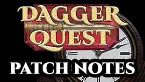

Release 0.3.7
Updates
- Various performance improvements have been implemented.
- Reduced the file size of DaggerQuest by about half.
- The Hitstun Threshold stat has been renamed to Flinch Resistance.
- The Block Chance stat has been renamed to Armor.
- Base Armor has been reduced from 5 to zero.
- Armor, Flinch Resistance, and all the damage resistances use a formula with diminishing returns. The more of the stat you have, the less effective it is.
- Having a shield equipped is no longer a requirement to successfully block.
- Kick no longer can hit multiple enemies.
- Reduced how much item mods scale with level.
- Modified the formula that determines numerical values in item mods.
- Reduced the attack speed of the Goblin Warlock.
- Player abilities no longer scale with level, and have had their values retuned.
- Leveling up closes the ability selector.
Bug Fixes
- Sound effects with multiple variants would play some variants much less frequently than others.
- Kick inflicted damage twice.
- Flinch Resistance (formally known as Hitstun Threshold) displayed incorrect values in the Character menu.
- The Goblin Underling could damage the player multiple times with his attack, in rare scenarios.
- Player and enemy abilities would sometimes still do damage if the player or enemy died in the middle of using them.
- Multiple door sound effects couldn't play at the same time, if multiple doors had been moused over.
- Mods with very few possible numerical values didn't have a reduced chance at rolling a higher value.
- Leggings didn't cast a shadow when equipped.
- The player didn't obtain access to the correct abilities upon leveling up.